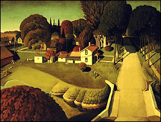

|
American Art | |
|
(c) |
Grant Wood |
|
Trace the course of America's development, from Gilbert
Stuart's portrait bust of George Washington to a Georgia
O'Keeffe painting of the desert Southwest. Paintings of
local Minnesota scenes like Hennepin Avenue and St. Anthony
Falls are also on view. | |